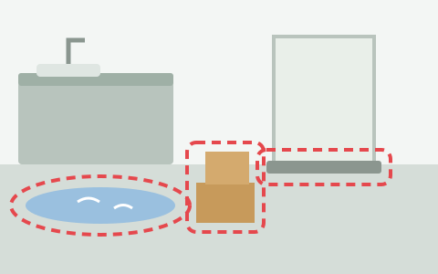
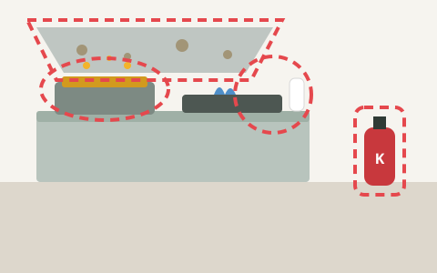
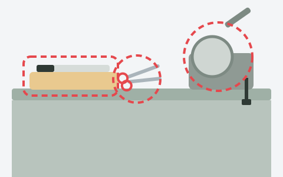
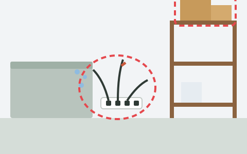

- 01 기본
- 02 현장
- 03 기기
기본정보
사진으로 찍어둘 곳
-

1. 주방 바닥·통로
넘어짐·미끄러짐물기·기름 바닥, 턱, 적재물
-

2. 화기·튀김기
화상·화재튀김기, 후드, 소화기 비치
-

3. 칼·전동 기기
베임·끼임칼·가위, 육절기 안전덮개
-

4. 전기·창고
감전·낙하멀티탭, 전선, 높은 선반
가동 중인 기기나 위험 구역 가까이에서는 촬영하지 마세요.
음성·텍스트 활용 팁
- 음성 녹음말씀하시면 텍스트로 자동 변환되며 수정할 수 있어요
- 직접 입력위험한 상황이나 특이사항을 글로 남겨주세요
- 01 기본
- 02 현장
- 03 기기
보유기기를 확인해 주세요
기기 직접 추가
추가한 기기는 이번 평가표에 들어가요.
업종 기기에서 고르기
초안을 만들고 있어요
60%
위험 신호를 판단하고 있어요
입력 분석 → 위험 항목 생성 → 위험 신호 판단 → 대책 추천 → 초안 저장